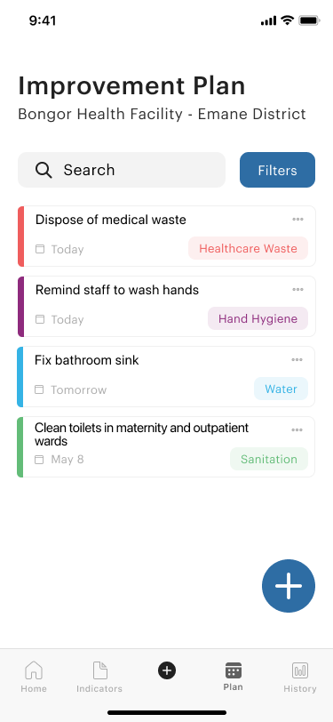

Task Completion - 10mins
Everyone was given a task last week and today we are going to dicuss what we all have done over the week for this meetinng. This is a quick overlap of the tasks everyone worked through and also feedback on their part.
New Design Update - Improvement Plan
Tasks
- Verification email be more personalized: "Hello, Thank you for registering for WASHFIT", mention name of facility in the email @Victor
- Add dropdown underneath the "Score Tracking" navbar to select domain to view line graph history of that domain and update data in the line graphs under "Score Tracking" accordingly to domain selection @Joey
- Finished, score tracking section should update based on domains now
- Mark tasks as completed: provide a better signal to the user that it's being competed, for ex: disappearing the task (look at Reminders app on iPhone) @Irenna
- Finished, updated action plan view more so there is also a sorting option for action view
- Change date to the deadline date and add innput field for selecting different dates @Ahmed
- Finished, added more changes to action plan input fields
Cannot edit the email template because Firebase wants to prevent spam emails
Will look into it more
Indicators Changes
Essentially, the list of categories of indicators and the indicators themselves should be available for all facilities, but each facility can choose which indicator applies to them. For example, the categories are “Water,” “Sanitation,” “Healthcare Waste,” etc., and under each category we have the indicators, such as “w_1a,” “w_1b,” “w_2a,” etc. in the “Water” category. Under each indicator, the facility can create as many assessments as they want, and these assessments will be displayed in the timeline view.
Questions - 30mins
Answered Questions
- What is the priority for the admin-level app (i.e. country government, WHO)?
- Admin level can change the indicators, "user level", i.e. at the facility cannot.
- This means that the admin level can adapt the app according to the national situation as all countries are different and require different indicators
- (e.g. more or less, wording of indicators)
- Do you have a comprehensive list of languages for translation?
- The priority will be French but we should focus on just the English version for now.
- Other countries may want to translate it but this is way down the line and probably past your project cycle!
- Do the users need email to login/register?
- Yes, users will need a email address to login and use as the username
- "Do what is easiest" - if you can have multiple emails that are somehow connected to one facility?
- If not, then one account per facility is fine.
Questions audio
Future Tasks - 15mins
Figure out how to structure the facility-specific assessments in Firebase but we are not sure what’s the easiest and most intuitive way to do so. Since there’s not that much time left in the cycle, we are trying to figure out if it is worth it to completely restructure the assessments in Firebase, which would also involve recoding many parts of the frontend code.